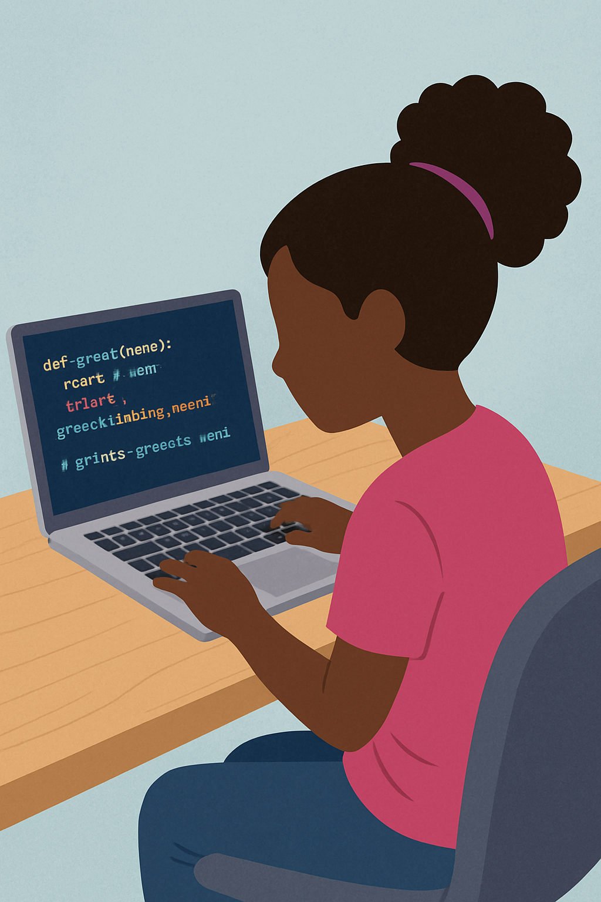

You've been doing an awesome job learning Scratch! Now you're ready for the next level: Python! Here's the cool part – everything you already know from Scratch works in Python too. Python is like Scratch without the colorful blocks. Instead of dragging blocks, you'll type commands, but the ideas are exactly the same!
Remember all those Scratch projects you've been making? Every single thing you learned applies to Python. Let me show you how the Scratch blocks you know match up with Python code.
Saying Things (The "say" block):
In Python:
print("Hello, Naomi!")
See? The print() command in Python does exactly what the "say" block does in Scratch!
Remember making the Scratch cat say multiple things? Here's the same idea in Python:
print("Hello, Naomi!")
print("Welcome to Python programming!")
print("Trinity and Ezra think you're cool!")
print("Mom and Dad are proud of you!")
Each print() line is like adding another "say" block in Scratch!
Storing Information:
In Python:
my_name = "Naomi"
my_age = 11
sister = "Trinity"
brother = "Ezra"
print(my_name)
print("I am", my_age, "years old")
In Python, we use the equals sign (=) instead of a "set" block, but it does the exact same thing – it stores information so we can use it later!
In Python:
age = 11
if age > 10:
print("You're old enough to code!")
Notice the colon (:) at the end and the indent (spaces) before print? That's how Python knows what happens inside the "if" – just like how Scratch blocks fit inside each other!
In Python:
for i in range(3):
print("Hello!")
This will print "Hello!" three times, just like the Scratch repeat block!
In Scratch, you made the cat sprite follow the mouse pointer and change colors! Here's how you'd do something similar in Python:
# In your Cat Art project, you used:
# "go to mouse-pointer" block
# "change color effect by 25" block
# "forever" loop
# In Python, we'd write it like this:
colors = ["red", "orange", "yellow", "green", "blue", "purple"]
for color in colors:
print("The cat is now", color, "!")
print("🐱")
The Scratch "forever" loop becomes Python's "for" loop. The "change color" block becomes our list of colors!
Both Scratch and Python can do math:
my_age = 11
trinity_age = 8
age_difference = my_age - trinity_age
print("I am", age_difference, "years older than Trinity")
Just like Scratch's green operator blocks, Python can add (+), subtract (-), multiply (*), and divide (/).
You Type Instead of Drag: In Scratch, you drag blocks. In Python, you type the commands. It's faster once you learn it!
More Power: Python can do everything Scratch does, plus way more! Professional programmers use Python to build real websites, apps, and games.
You're Growing Up as a Coder: Scratch taught you to think like a programmer. Python lets you code like a professional!